大熊猫繁育基地
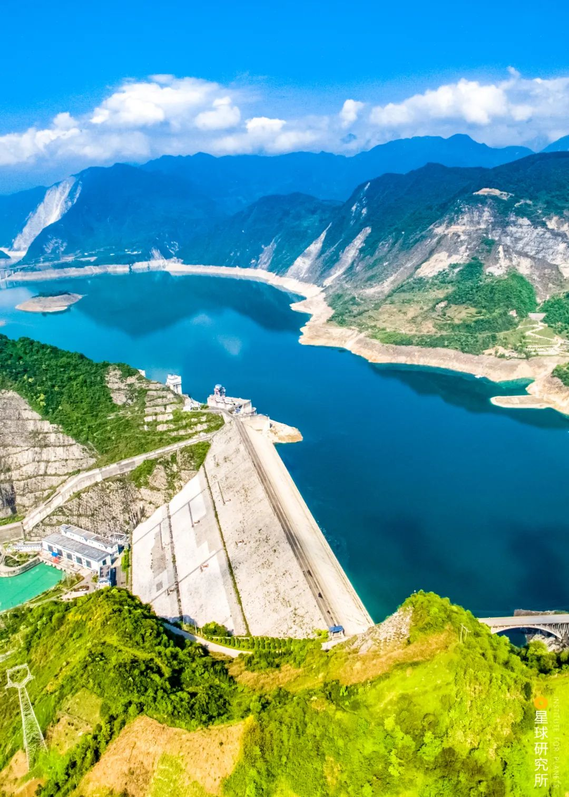都江堰
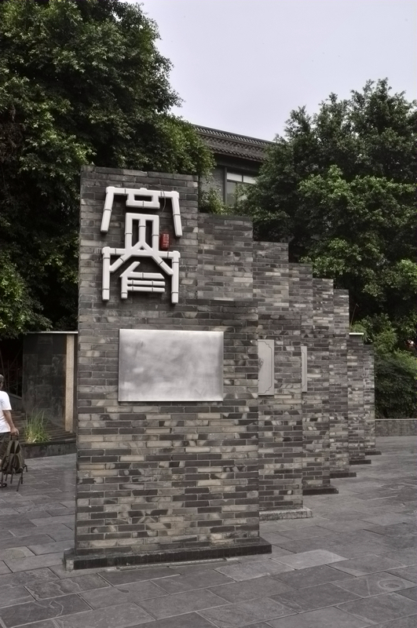宽窄巷子
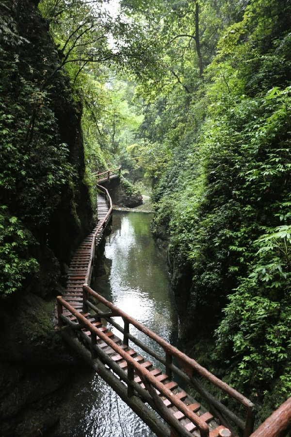青城山
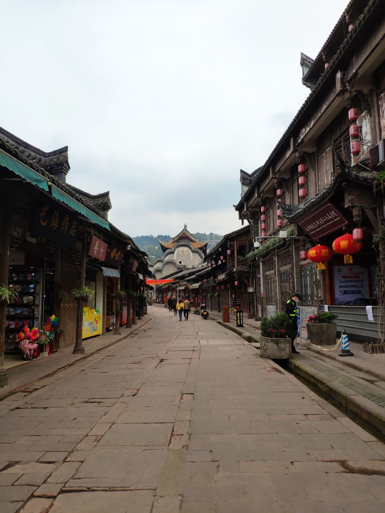洛带古镇
都江堰是当今世界年代久远、唯一留存、以无坝引水为特征的宏大水利工程，主要由鱼嘴、飞沙堰、宝瓶口三大主体工程构成。都江堰内还有灌县古城 、奎光塔、虹口景区、南桥、园明宫、清溪园、都江堰城隍庙、玉垒关、离堆公园、秦堰楼、玉垒山公园、掷笔槽、青城外山景区、青城前山景区青城后山景区两河漂流药王庙、幸福大道、翠月湖、灵岩。
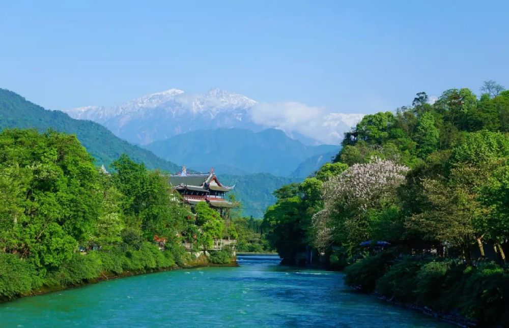
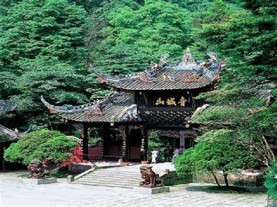
青城山景区为前山和后山两部分，全山林木青翠，四季常青，诸峰环峙，状若城廓，故名青城山。丹梯千级，曲径通幽，以幽洁取胜。景区内外，天师洞和圆明宫幽静是青城山的一大特色。
宽窄巷子原有70多座院落、300多间房间。如今老城墙、金水河等已经消失。宽窄巷子由宽巷子、窄巷子和井巷子三条平行排列的老式街道及四合院落群组成，是成都市三大历史文化保护区之一，是老成都“千年少城”城市格局和百年原真建筑格局的最后遗存，也是北方胡同文化和建筑风格在南方的“孤本”。这条清代街区记录了老成都的沧桑历史，其建筑风格兼具川西民居与北方四合院的特点。
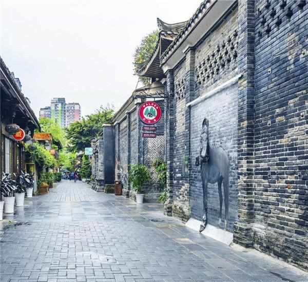
其他景点推荐
- 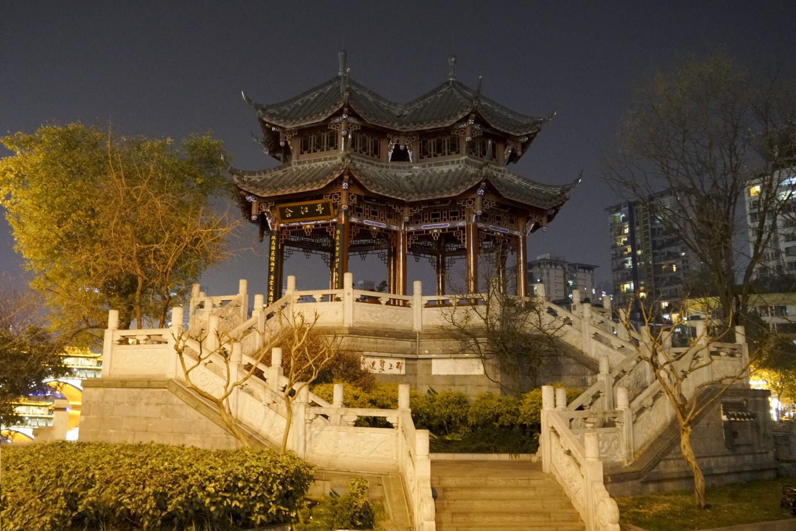
- 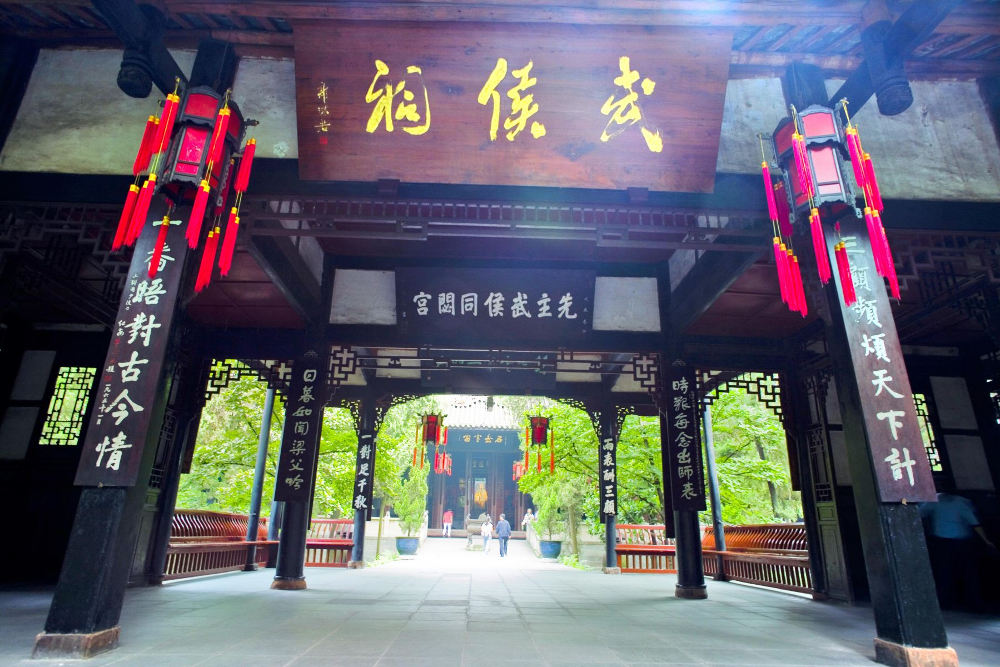
- 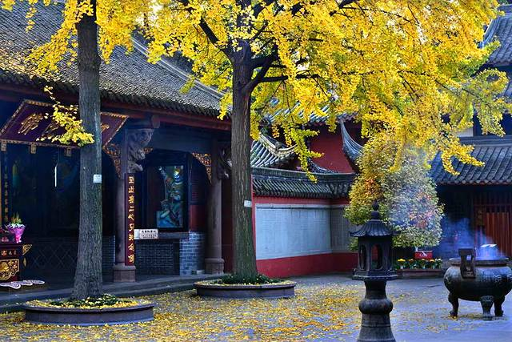
- 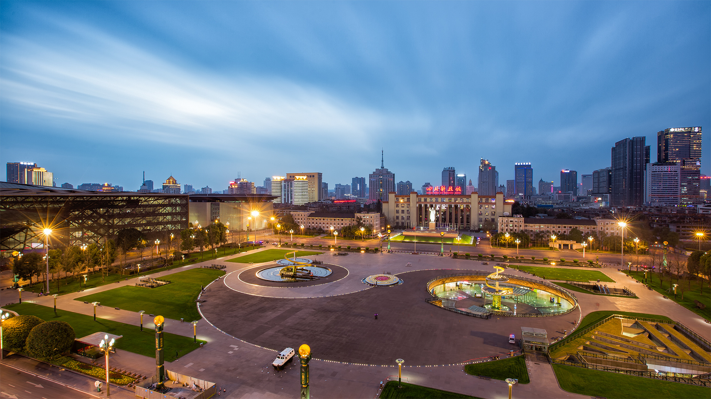
- 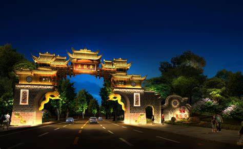
- 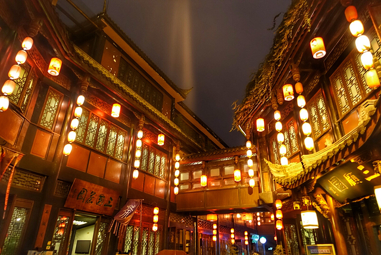